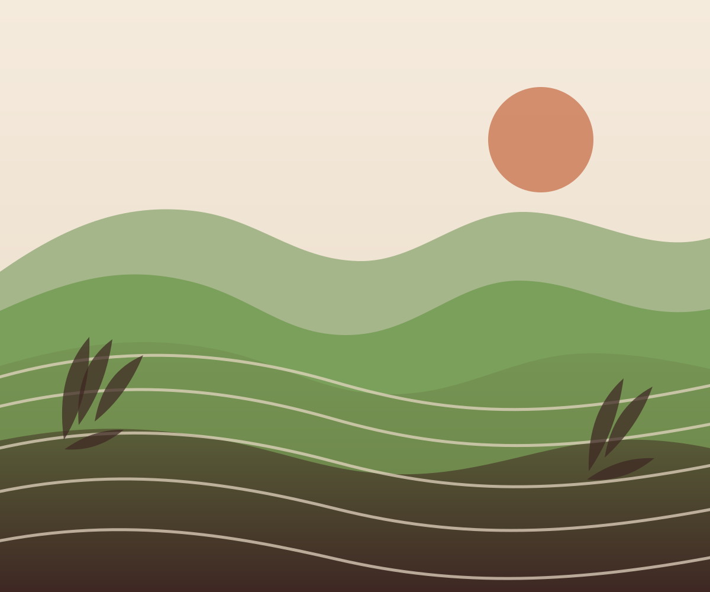

Crop & harvest guidance
Explore practical pointers for crop stages, harvest timing and post-harvest care.
01Rooted in farming. Made for your next step.
Practical crop tools and clearer market connections, designed around the people who grow our food.

The right help, right where you need it
Useful starting points for the decisions that shape every growing season.
Explore practical pointers for crop stages, harvest timing and post-harvest care.
01Get a clearer starting point for thinking about water needs across your field.
02Understand field quantities with simple, approachable calculation tools.
03Review offers side by side and see the details that matter to your choice.
04Find a simpler path to exploring agricultural schemes and financing information.
05Ask everyday farming questions in a friendly, easy-to-understand way.
06These tools are being introduced in stages. No live offers or scheme information are shown on this page.
Simple from the very start
FarmAura is being designed to keep useful information close and easy to understand.
Get startedBegin with a simple welcome and see what FarmAura can help with.
Select the experience that fits you best: farmer or seller.
Explore the tools and information relevant to your needs.
A companion for every growing season
FarmAura is being created to make agricultural information and digital tools easier to reach for farmers across India. We believe useful guidance should feel clear, practical and grounded in the realities of the field.
Built around people, their land and the decisions ahead.
Your next step starts here